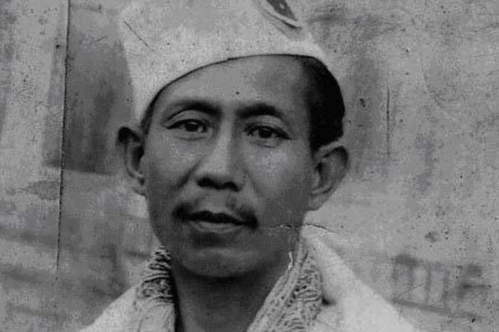

Hijam Irabot

Jana Neta Hijam Irabot : A Legendary Socio-Political Revolutionary of Manipur
Brief Profile of Hijam Irabot
Hijam Irabot: Born on 30 September 1896 at Oinam Leikai near Pishumthong, Imphal, Manipur. He was known as Jana-Neta (Leader of the people) by the Cacharis, Simanta Prahari (Sentinel of the Frontier) by Hemango Biswas, AFOJI ( elder comrade in Burmese or, comrade Ahal to the armed Manipuri red guards) by the then Burmese Communist Party.
Hijam Irabot is a true legend and humanitarian. To know more about him, click here